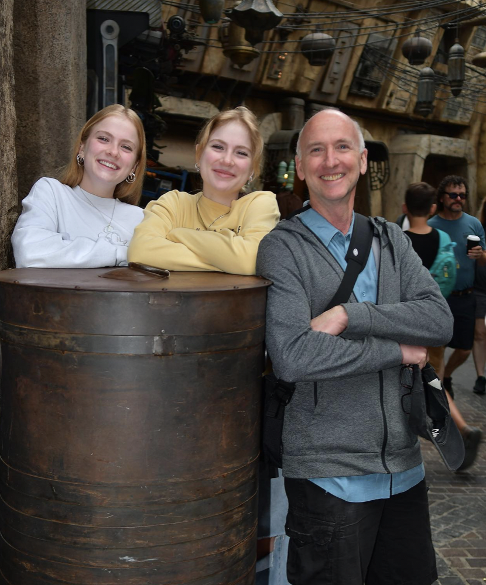
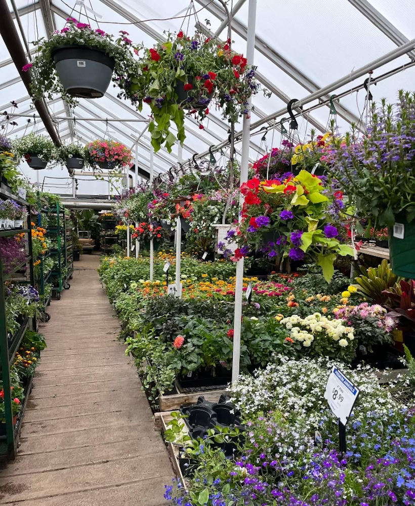
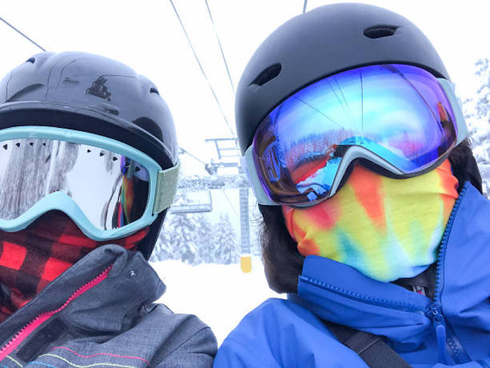

Family
Coming from a small family, everything I do is with them in mind. I have had the joy of being able to go to school with my twin sister for my entire life, making sure that family is not far away. My dad is the person who pushed me to do well in Computer Science, as I grew up watching him code, and is my biggest motivator to continue to succeed!

Indoor Gardening
Keeping plants is my escape from the real world when I need one. I have found that maintaining plants is a great way for me to maintain a healthy headspace when school and work get stressful! With over 25 different species of plants, I have amassed quite the collection, yet am always eager to expand when I get the opportunity as I am up for the challenge.

Snowboarding
Being raised in Colorado, I have skied for longer then I have been able to walk. It was not until recent years that I decided to take on snowboarding as well. While definitly a massive challenge that I underestimated, it has been one of the most rewarding pass times I have done. Being able to see how much growth you can acheive each time you go is the most motivating aspect of learning!
Reading
One thing I have learned about myself through life is that I am a homebody by nature. I can almost always be found reading on the patio! Since a young age, I have collected all the books I have read and formed a small library of sorts to commemorate each time I have finished a book. Currently, my favorite book series of all time is "Six of Crows" written by Leigh Bardugo.